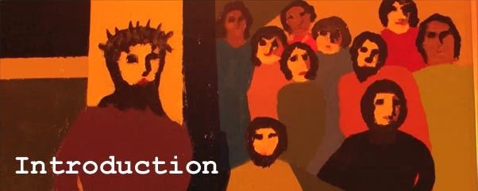

The Rev. Scott McLeod, Diocese of British Columbia, presents 14 Lenten video reflections on the 14 Stations of the Cross. Weaving together art, photos, music, and powerful narrative, these videos share a common theme: seeking the face of God in other people.
These videos are a creative Lenten practice you can do on your computer or smartphone at any time of day. Fresh and provocative, they will lead you to deeper reflection on the important hours surrounding Christ’s death.
The first video will be released on Ash Wednesday, Feb. 13, and beginning Feb. 18 videos will run every Monday and Thursday throughout Lent. Subscribe online now.